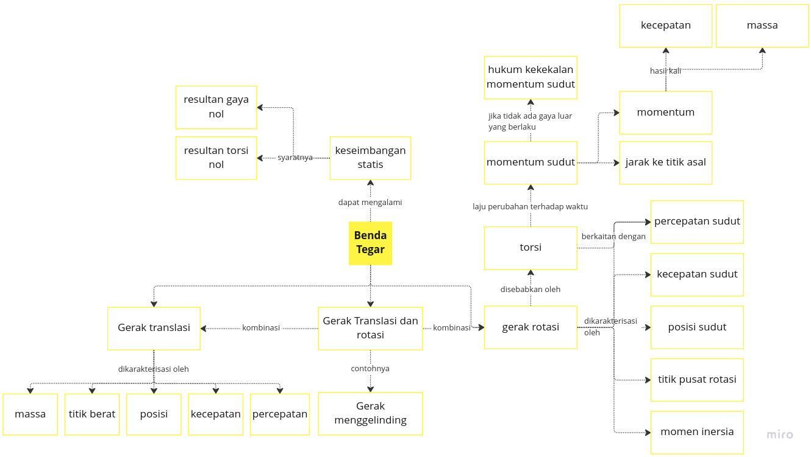
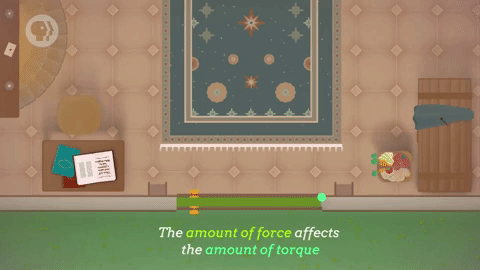

Pendahuluan
Deskripsi
- Media belajar ini berisikan materi - materi tentang dinamika rotasi dan keseimbangan benda tegar yang meliputi torsi, momen inersia, energi kinetik pada benda yang berotasi dan hukum kekekalan momentum sudut.
- Media belajar ini dikembangkan sebagai sumber belajar peserta didik kelas XI dalam melaksanakan blended learning model flipped classroom. Media belajar ini disusun dengan berbasis model pembelajaran POE (Predict, Observe, and Explain). Pada tahap predict, siswa akan menduga suatu permasalahan yang disajikan oleh pendidik. Kemudian pada tahap observe, peserta didik melakukan pengamatan dari dugaan yang telah dibuat. Lalu pada tahap explain, peserta didik dapat menemukan kebenaran atau fakta dari dugaan dan pengamatan yang telah dilakukan dalam bentuk penjelasan.
- Dengan menggunakan media belajar ini, diharapkan peserta didik dapat lebih memahami dan tertarik untuk mempelajari materi fisika SMA kelas XI terkait dengan dinamika rotasi dan keseimbangan benda tegar.
Kompetensi Dasar
3.1 Menerapkan konsep torsi, momen inersia, titik berat, dan momentum sudut pada benda tegar (statis dan dinamis) dalam kehidupan sehari-hari misalnya dalam olahraga.
4.1 Membuat karya yang menerapkan konsep titik berat dan kesetimbangan benda tegar.
Petunjuk Penggunaan Media Belajar
Bagi pendidik yang menggunakan media belajar ini :
- Mempelajari materi dalam media belajar secara berurutan.
- Membaca peta konsep agar lebih memahami alur materi.
- Menggunakan media ini sebagai sumber belajar peserta didik ketika melaksanakan blended learning model flipped classroom.
Bagi peserta didik :
- Mempelajari materi dalam media belajar secara berurutan.
- Membaca peta konsep agar lebih memahami alur materi.
- Mengerjakan quiz yang tersedia.
- Menuliskan hal - hal yang kurang dipahami kemudian disampaikan ketika pembelajaran di kelas.

Dinamika Rotasi
Dinamika rotasi adalah ilmu yang mempelajari tentang gerak rotasi (berputar) dengan memperhatikan aspek penyebabnya, yaitu momen gaya. Momen gaya atau yang lebih dikenal dengan torsi ini akan menyebabkan terjadinya percepatan sudut. Suatu benda dikatakan melakukan gerak rotasi (berputar) jika semua bagian benda bergerak mengelilingi poros atau sumbu putar. Sumbu putar benda terletak pada salah satu bagian dari benda tersebut.
Benda Tegar
Benda tegar merupakan benda yang tidak mengalami perubahan bentuk akibat pengaruh gaya, sehingga dalam melakukan pergerakan, benda tersebut tidak mengalami perubahan bentuk dan volume benda. Benda tegar dapat melakukan gerak translasi dan rotasi.
Torsi
Ketika kita membuka dan menutup pintu, sebenarnya kita telah mengaplikasikan torsi. Torsi atau momen gaya adalah ukuran gaya yang dapat menyebabkan suatu benda berputar. Torsi didefinisikan sebagai ukuran keefektifan gaya yang diberikan atau yang bekerja pada suatu benda untuk memutar benda tersebut terhadap suatu poros tertentu.

Torsi dapat dituliskan dengan persamaan:
\[ \tau = (\vec{F} \space sin \theta) \space r \]
di mana:
- \( \tau \) (dibaca tau) adalah torsi atau momen gaya.
- \( \vec{F} \) adalah gaya yang diberikan.
- r adalah jarak dari titik yang dikenai gaya terhadap sumbu putar.
- θ adalah sudut antara gaya F dan jarak r.
Simulasi
Coba kalian amati apa hal yang akan terjadi jika,
- jarak (radius) diperbesar dan diperkecil, massa dan gaya nilainya tetap
- massa (mass) diperbesar dan diperkecil, jarak dan gaya nilainya tetap
- gaya (force) diperbesar dan diperkecil, jarak dan massa nilainya tetap
Quiz Torsi
Momen Inersia
Momen inersia didefinisikan sebagai produk antara massa benda dan kuadrat jarak sumbu putar dari titik pusat massa benda. Momen inersia dapat dituliskan dengan persamaan:
\[ I = m r^2 \]
di mana:
- I adalah momen inersia
- m adalah massa benda
- r adalah jarak sumbu putar dari titik pusat massa benda
Momen Inersia Beberapa Benda
| Benda | Poros | Gambar | Momen inersia |
|---|---|---|---|
| Silinder pejal | Melalui sumbu |  | \( I={\frac {1}{2}} \space mR^2 \) |
| Silinder pejal | Melintang sumbu |  | \( I={\frac {1}{4}} \space mR^2 + {\frac {1}{12}} \space mL^2 \) |
| Silinder berongga | Melalui sumbu |  | \( I=mR^2 \) |
| Bola pejal | Melalui pusat |  | \( I={\frac {2}{5}} \space mR^2 \) |
| Batang silinder | Pusat |  | \( I={\frac {1}{12}} \space mL^2 \) |
| Batang silinder | Ujung |  | \( I={\frac {1}{3}} \space mL^2 \) |
Simulasi
Amati simulasi diatas! bagaimana pergerakan masing - masing benda? apakah bergerak secara bersamaan? jika tidak, mana yang lebih dulu sampai ke dasar bidang miring? kenapa?
Quiz Momen Inersia
Energi Kinetik pada Benda yang Menggelinding
Energi kinetik adalah jenis energi yang dimiliki suatu benda karena memiliki kecepatan. Pada benda yang berotasi, energi kinetik dapat dibedakan menjadi dua jenis, yaitu energi kinetik translasi dan energi kinetik rotasi. Pada simulasi sebelumnya, silinder yang menuruni bidang miring mengalami gerak translasi dan gerak rotasi secara bersamaan.
Energi Kinetik Translasi
Energi kinetik translasi adalah energi yang dimiliki suatu benda karena memiliki kecepatan translasi, yaitu kecepatan gerakan benda secara keseluruhan. Energi kinetik translasi dapat dituliskan dengan rumus:
\[ E_k,trans = \frac{1}{2} m v^2 \]
dimana:
- \( E_k \),trans adalah energi kinetik translasi
- m adalah massa benda
- v adalah kecepatan benda.
Energi Kinetik Rotasi
Energi kinetik rotasi adalah energi yang dimiliki suatu benda karena memiliki kecepatan rotasi, yaitu kecepatan putar benda. Energi kinetik rotasi dapat dituliskan dengan rumus:
\[ E_k,rot = \frac{1}{2} I ω^2 \]
dimana:
- \( E_k \),rot adalah energi kinetik rotasi
- I adalah momen inersia benda
- ω adalah kecepatan sudut benda
Total energi kinetik suatu benda yang berotasi adalah jumlah dari energi kinetik translasi dan energi kinetik rotasi.
Quiz Energi Kinetik pada Benda yang Menggelinding
Hukum Kekekalan Momentum Sudut
Momentum Sudut
Momentum sudut adalah ukuran momentum rotasi suatu benda atau sistem benda. Momentum sudut dapat didefinisikan sebagai produk antara momen inersia suatu benda dan kecepatan sudut benda tersebut. Momentum sudut dapat dituliskan dengan rumus:
\[ L = I ω \]
dimana:
- L adalah momentum sudut
- I adalah momen inersia benda
- ω adalah kecepatan sudut benda
Momen inersia adalah ukuran ketahanan suatu benda terhadap perubahan kecepatan rotasinya, sedangkan kecepatan sudut adalah kecepatan rotasi suatu benda. Oleh karena itu, momentum sudut merupakan ukuran kekuatan rotasi suatu benda atau sistem benda.
Hukum Kekekalan Momentum Sudut
Hukum kekekalan momentum sudut adalah hukum fisika yang menyatakan bahwa momentum sudut suatu sistem benda tidak akan berubah kecuali jika terdapat gaya luar yang bekerja pada sistem tersebut. Momentum sudut adalah ukuran momentum rotasi suatu benda atau sistem benda.
Hukum kekekalan momentum sudut dapat dituliskan dengan rumus:
\[ L_i = L_f \]
dimana:
- \( L_i \) adalah momentum sudut awal suatu sistem benda
- \( L_f \) adalah momentum sudut akhir suatu sistem benda
Jika tidak ada gaya luar yang bekerja pada suatu sistem benda, maka momentum sudut sistem tersebut tidak akan berubah, yaitu \( L_i = L_f \). Namun, jika terdapat gaya luar yang bekerja pada sistem tersebut, maka momentum sudut sistem tersebut akan berubah sesuai dengan hukum kekekalan momentum sudut.
Simulasi
Amati simulasi diatas! Apa yang terjadi jika,
- orang didekatkan ke sumbu putar, massa orang dan silinder tetap
- massa orang diperbesar, bandingkan orang ketika dipinggir silinder dan ditengah silinder, radius dan massa silinder tetap